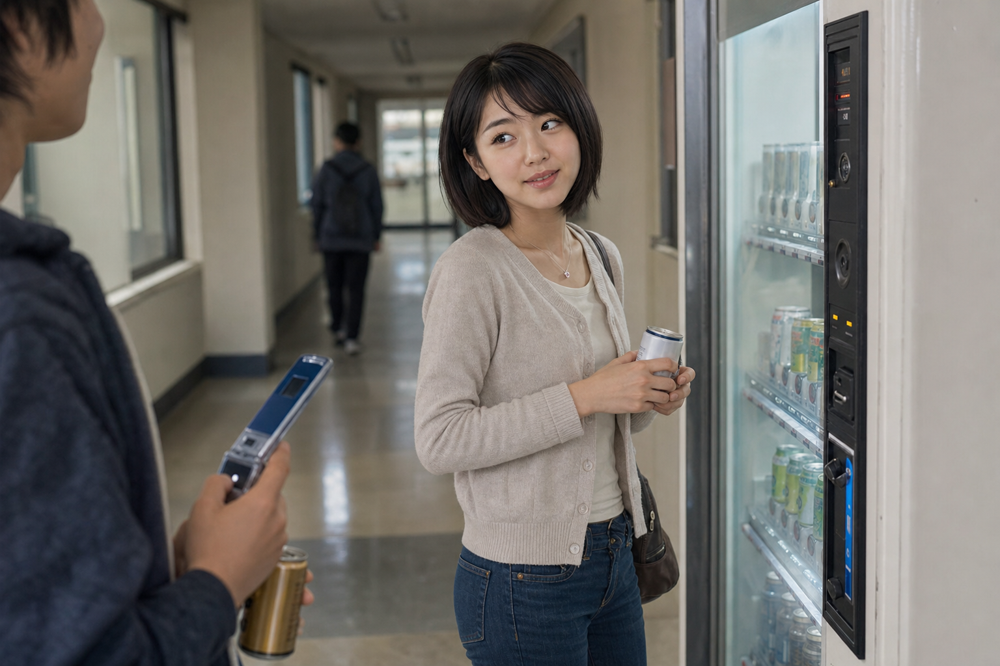

091. 답장 시간
오전 아홉 시 십칠분.
강의실 창가 쪽 자리에 앉은 용식은 폴더폰을 뒤집어 놓은 채 교재를 펼쳤다. 칠판 앞에서는 조교가 다음 주 시험 범위를 적고 있었고, 창밖 운동장에서는 체육 수업을 마친 학생들이 가방을 어깨에 걸고 느릿하게 지나갔다. 가을 햇빛은 생각보다 밝았지만, 책상 위에 엎어 둔 폴더폰 그림자만 유난히 진했다.
폰이 짧게 울렸다.
용식은 바로 답장을 썼다.
다시 폰을 뒤집었다. 조교가 출석부를 넘기는 소리가 들렸다. 평소 같으면 별일 아닌 문자였다. 수업 들어갔냐고 묻고, 밥 먹었냐고 묻고, 끝나면 연락하라고 하는 그런 것. 초연은 원래 자주 물었다. 좋아하면 확인하고 싶어 하는 사람이었다.
그런데 오늘은 문장 끝마다 손가락이 걸렸다.
어제 밤부터 그랬다. 초연은 학원 얘기를 직접 꺼내지 않았다. 한서윤이라는 이름도 말하지 않았다. 대신 "집 도착했어?", "씻었어?", "내일 몇 시 수업이야?", "끝나면 바로 연락해" 같은 말들이 평소보다 촘촘하게 들어왔다. 한 번에 화를 내는 것보다, 그렇게 촘촘한 연락이 더 숨을 막히게 했다.
십분 뒤 폰이 다시 울렸다.
용식은 화면을 한참 바라봤다. 학원은 원래 가야 하는 날이었지만, 오전에 학원에서 문자가 와 있었다. 담당 강사의 개인 사정으로 저녁 수업이 보강일로 밀렸다는 내용이었다. 이상하게 다행이라는 생각부터 들었다.
답장을 보내자마자 초연에게서 바로 문자가 왔다.
용식은 입술 안쪽을 살짝 깨물었다.
수업 시작 종이 울렸다. 교수는 들어오지 않았고, 학생들은 각자 떠들거나 프린트를 넘겼다. 용식은 폰을 닫았다가 다시 열었다. 답장을 늦게 하면 그것도 설명해야 할 것 같았다.
그 문장 앞에서 그는 잠깐 손을 멈췄다. 같이 공부하는 게 싫은 건 아니었다. 싫다면 그건 거짓말이었다. 초연이 옆에 앉아 책을 넘기고, 중간중간 모르는 용어를 묻고, 졸리다며 커피를 사 오자고 하는 시간은 여전히 좋았다. 그런데 오늘은 그것마저 감시처럼 느껴졌다.
좋은 것과 답답한 것이 같은 얼굴로 앉아 있었다.
바로.
그 두 글자가 이상하게 오래 남았다.
점심시간이 되자 용식은 매점 앞 자판기에서 캔커피를 뽑았다. 동전이 떨어지는 소리와 함께 미지근한 캔이 손바닥으로 굴러 내려왔다. 캔을 따려는 순간 정다은이 뒤에서 불쑥 고개를 내밀었다.
[정다은] "뭐야. 너 오늘 되게 피곤해 보인다."
[김용식] "시험 기간이라 그렇지."
[정다은] "시험 때문에 그런 얼굴 아닌데."
그녀는 그의 손에 들린 캔커피와 엎어 든 폴더폰을 번갈아 봤다. 용식은 반사적으로 폰을 주머니에 넣었다. 정다은의 눈이 그 움직임을 놓치지 않았다.
[정다은] "초연이?"
[김용식] "뭐가."
[정다은] "아니, 그냥. 너 요즘 폰 울리면 얼굴이 먼저 바뀌어서."
용식은 캔뚜껑을 땄다. 손끝에 커피가 조금 튀었다. 정다은은 웃는 얼굴로 옆 자판기에 동전을 넣었다. 그녀의 웃음은 밝았지만, 말끝은 생각보다 얇고 날카롭게 들어왔다.
[김용식] "그런 거 없어."
[정다은] "있어 보이는데."
[김용식] "너는 왜 남의 얼굴을 그렇게 봐."
[정다은] "같은 과잖아. 그리고 너는 티가 나."
그녀는 캔 사이다를 뽑아 손에 들고, 바로 마시지 않았다. 대신 차가운 캔을 손등에 굴리며 그를 올려다봤다.
[정다은] "너 초연이한테 검사받아?"
용식은 대답하지 않았다.
정다은은 그 침묵 하나로 충분하다는 듯 작게 웃었다.
[정다은] "아, 맞구나."
[김용식] "아니라고."
[정다은] "아니면 그렇게 빨리 아니라고 안 하지."
그녀는 더 캐묻지 않고 사이다 캔을 땄다. 탄산이 올라오는 소리가 짧게 터졌다. 용식은 그 소리가 괜히 크게 들렸다. 정다은은 한 모금 마신 뒤, 아무렇지 않게 자리를 옮겼다.
[정다은] "너 진짜 숨 막히겠다."
그 말은 장난처럼 남았지만, 장난처럼 사라지지는 않았다.

오후 수업이 끝나고 도서관으로 가는 길, 초연에게서 전화가 왔다. 용식은 사람들 사이를 빠져나와 계단참에 섰다.
[김초연] "끝났어?"
[김용식] "어. 방금."
[김초연] "바로 전화했네?"
[김용식] "끝나면 연락하라며."
[김초연] "응. 잘했네."
잘했네.
예전에는 장난처럼 들렸을 말이 오늘은 채점처럼 들렸다. 초연은 전화 너머에서 과제 때문에 아직 작업실에 있어야 한다고 했다. 저녁에는 못 볼 것 같다고, 대신 집에 가면 전화하라고 했다. 용식은 알겠다고 답했다. 통화가 끝난 뒤에도 계단참에 잠깐 서 있었다. 난간에는 누가 흘린 커피 자국이 말라붙어 있었다.
도서관 자리는 많았다. 그는 일부러 창가 구석을 골랐다. 책을 펼쳤지만 글자가 눈에 들어오지 않았다. 폴더폰을 책 오른쪽에 놓고, 오분마다 화면을 확인했다. 초연의 연락을 기다리는 건지, 오지 않기를 바라는 건지 스스로도 알 수 없었다.
저녁 여덟 시쯤, 학원에서 다시 문자가 왔다.
그 짧은 문자를 보고 그는 안도했다. 동시에 이상한 허탈함도 느꼈다. 한서윤이 물어보겠다고 했던 날이 밀렸다. 대답하지 않아도 되는 날이 하루 더 생겼다. 그런데 그 하루는 자유가 아니라 유예처럼 느껴졌다.
밤 아홉 시가 넘어 도서관을 나왔을 때, 초연에게서 전화가 왔다. 그는 주차장 쪽으로 걸으며 받았다.
[김초연] "어디야?"
[김용식] "도서관 나왔어."
[김초연] "혼자?"
[김용식] "어."
[김초연] "진짜?"
용식은 걸음을 멈췄다. 주차장 가로등 아래, BMW 유리창에 자기 얼굴이 희미하게 비쳤다. 웃고 있지도, 화가 난 것도 아닌 어중간한 얼굴이었다.
[김용식] "초연아."
[김초연] "왜."
[김용식] "그렇게 물어보면 내가 뭐라고 해야 돼."
전화 너머가 잠깐 조용해졌다.
[김초연] "그냥 물어본 거야."
[김용식] "그냥 아닌 것 같아서."
[김초연] "그럼 내가 안 물어봐야 돼?"
말이 거기서 멈췄다. 용식은 차 키를 손에 쥐고도 문을 열지 못했다. 초연은 한숨을 쉬었다. 아주 작게, 그러나 숨기지 못할 만큼 분명하게.
[김초연] "나도 내가 왜 이러는지 알아. 근데 너도 요즘 이상하잖아."
[김용식] "나 이상한 거 없어."
[김초연] "그 말이 제일 이상해."
통화는 싸움으로 번지지 않았다. 초연은 피곤하다며 먼저 끊었고, 용식은 한참 뒤에야 차 문을 열었다. 차 안에는 낮 동안 갇혀 있던 열기가 남아 있었다. 그는 창문을 살짝 내리고 시동을 걸었다.
집으로 돌아가는 길, 정다은이 낮에 했던 말이 자꾸 떠올랐다.
너 진짜 숨 막히겠다.
그 말이 틀렸다고 말하고 싶었다.
그런데 숨이 막혔다.